这个痛点，是不是你
痛点卡 · 案例编程-04 瀑布流作品集页（编程网页 / CodexAI）
依据：子Agent执行规范.md 第〇节「痛点先行」+ 〇补「痛点提取细则」
出处：案例清单.md编程-04 条目（所属材料 M4 =CodexAI作品集\课程资料\codex网页制作教程\ppt\index.html的 P09 瀑布流专页）
手册原文：手册Markdown\CodexAI作品集\codex网页制作教程_网页笔记.md → 第 47–50 行（第 03 段 · 交互与瀑布流）
一、痛点原句（引用手册原文）
位置1 · P09 瀑布流专页定义句（手册 47–50 行，逐字）：
「P09 瀑布流：定义（卡片像水一样填满最短的列，普通网格每行对齐）、适用（图片社区、作品集、商品图集、灵感墙、案例库 —— "图片多、长短不一"）、实现（简单版 CSS columns；精确版用 JS 算每列高度）。」
位置2 · P09 的三句展开（案例清单.md 编程-04 引用的原文）：
原文「瀑布流：卡片像水一样填满最短的列。普通网格每行对齐；瀑布流每张卡片高度不同，系统总是把新卡片放到当前最短的列里。」原文「用在哪：图片社区、作品集、商品图集、灵感墙、案例库。内容"图片多、长短不一"时很适合。」原文「怎么做：简单版可用 CSS columns；更精确的版式通常用 JS 计算每列高度，再决定卡片放哪一列。」位置3 · P08 交互的判据句（手册 49 行，本案例的"交互"验收锚点）：
「"交互是让用户知道'可以做、做完了、出错了'"。」
同页六种常见交互里，本案例直接对应其中三种：悬停反馈 / 加载状态 / 瀑布流。
位置4 · 领域总纲（案例清单·领域三 开篇，M5 结束语）：
「作品比简历更快说话。先做出一个能被别人打开的东西。」
二、痛点主体
- 谁：攒了一批长短不一的图片作品、想给自己做一页作品集的人——本案例具体化为一个视觉设计师 / 摄影师 / 插画师（做内容的人，能挑图、会审美，但不写前端）。
- 场景：手上有 20 件作品图（首屏 16 件），长宽比从 0.52:1 到 1.79:1 都有（横的、竖的、方的混在一起，跨度 3.46 倍）。要把它们摆成一页能发出去的作品集。
- 交付对象：发给客户 / 贴在简历里 / 发到作品社区。"别人打开就能看到作品"是硬指标。
三、旧做法的代价（绑定时长 / 动作量）
手册只点出了"普通网格每行对齐、会很难看"，没写具体代价。这里把代价量化出来（本案例已用脚本实测，见 阶段1_素材与数据准备/产物/数据核对报告.txt）：
| 旧做法 | 具体代价（可核算） |
|---|---|
| 普通网格（Grid / Flex 等宽卡片） | 每行以最高的那张为准 → 同一行里矮卡片下方必然留白。本案例首屏那 16 张图按 3 列普通网格排，实测空白合计 2,262px、占网格面积 23.3%（最夸张的一行：行高 788px，其中矮卡下方空 567px）。图越高矮差越大，空白越夸张。 |
| 手工拖位置（设计工具里摆） | 要"自然下落"就得一张一张手动挪，挪到最后自己都对不齐；换一张图、加一张图，整版重排一遍。 |
| 让它"看着像瀑布流"的假做法 | float:left + 固定高度 / 把长图裁成同一高度 → 裁掉作品本身（对作品集是致命的），或者用 overflow:hidden 把溢出藏起来，手机上直接崩（横滚变成缩视口）。 |
| 不知道选哪种实现 | 手册给了两条路（CSS columns / JS 算列高），但没说什么时候用哪条——于是要么用了 columns 被"加载更多时整版乱跳"坑到，要么为了个 20 件作品的页面去啃一段看不懂的 JS。 |
真正想要的结果：图片自然下落、填最短的列，长短不一的图之间没有一行对齐留下的空洞；鼠标悬停有反馈、图多的时候有加载状态；手机上能看、不横滚——而且知道 CSS 版和 JS 版分别在什么时候该用哪一个。
四、想要的目标（做到什么程度算"解决好"）
- 真的自然下落：卡片高度明显不一（不是裁成一样高），新卡片落到当前最短的列里（可被脚本证明，不是"看着像"）。
- 无错位：卡片之间不重叠、不留"对齐空洞"；列与列的底部高度差在可接受范围内（本案例实测 ≤ 1 张最矮卡片）。
- hover 有反馈：鼠标移上去看得出"这张可以点"（手册 P08 判据："让用户知道可以做"）。
- 有加载状态：首屏有骨架/占位、图片逐张淡入、图多时有"加载更多"且加载中有明确状态（手册 P08 判据："让用户知道做完了 / 出错了"）。
- 手机可读不横滚：390px 能读、图不裁、不横向滚动（"发出去"的主要场景就是别人用手机点开）。
- 两条实现路线都给出来，且说清边界：CSS
columns简单版 + JS 算列高精确版各一版，并明确"什么时候用哪条"。
五、【补全】
【补全】手册 P09 讲清了"瀑布流是什么、用在哪、怎么实现"，但没讲透"为什么值得解决"，也没讲两条路的代价差异。这里补三句：
- 痛点的实质不是"不会写瀑布流"，而是"被普通网格的空白出卖了审美"。 一个设计师挑出来的这 20 件作品，好坏先不说，排版本身就在扣分：长短不一的图被强行按行对齐，中间那一块块空白会让人一眼看出"这是套了个模板"。瀑布流的价值不是技术炫技，是让作品本身成为版面的节奏——这正是"作品比简历更快说话"能不能成立的前提。
- 两条实现路线不是"简单版 / 高级版"，是"两种代价"。 手册说"简单版 CSS
columns、精确版 JS 算列高"，容易被理解成"能上 JS 就上 JS"。实际上：columns的代价是内容顺序被拆成"先填满第一列再填第二列"，而且追加新内容时整版会重新平衡、卡片会跳（本案例实测：加 4 张图后 11/16 张旧卡片移动了位置）；JS 算列高的代价是多一段代码 + 要自己处理 resize，换来的是追加内容时旧卡片原地不动（实测：0/16 张移动）。所以选哪条，取决于"这个页面会不会往下加东西"。 - "加载状态"在这个页面里不是锦上添花，是必需品。 瀑布流的卡片高度依赖图片的真实尺寸，图没加载完之前根本没有正确的高度可算。所以骨架屏 + 图片解码后淡入，不只是好看——它是在告诉用户"还没好，别急着判断这版排得乱"。这正好落回 P08 那句判据。
—— 这也解释了为什么验收点里"卡片高度不一"要和"填最短列"绑在一起看：只有高度真的不一，"填最短列"才有意义；把图裁成一样高，瀑布流就退化成普通网格了。
六、价值归类
✅ 目标导向：用户要的是"一页能发出去、能让作品自己说话的作品集"（结果：别人打开看到的是一版有节奏的排版，不是一堆对齐留白的格子）→ 所以先解决"长短不一的图怎么自然下落"，再谈 hover 和加载状态。 ❌ 非"工具理性"：不是"我有 20 件作品所以找个组件把它们装进去"。这条任务里最容易掉进去的工具理性陷阱非常具体——直接去 npm 找一个 masonry 库、或者照着某个现成的瀑布流 demo 抄一段看不懂的代码，而真正该先回答的是："这页会不会往下加东西？手机打开时这版还成不成立？"
七、跨章线索
- 回扣第01章总纲（问答式 AI vs 能执行干活的 AI）：本案例里 AI 不是陪你讨论"瀑布流用 column-count 还是 flex 好"，而是把两版都能打开的文件直接做出来，并把两条路的代价量给你看。
- 呼应 P08 六种交互（悬停反馈 / 加载状态 / 瀑布流）与那句判据"交互是让用户知道'可以做、做完了、出错了'"——本案例的验收点逐条对上了这三种交互。
- 呼应 M4 P15 交付前五件事（内容真实 / 手机可读 / 交互完整 / 风格统一 / 授权清楚 / 能打开）——本案例验收点逐条覆盖（见
任务卡.md）。 - 呼应 M5「作品比简历更快说话。先做出一个能被别人打开的东西」：一页能把 20 件长短不一的图摆好看的作品集，就是那个"能被别人打开的东西"。
AI 是怎么解决的
产物 · 可直接交互
在框内直接交互，或点"新窗口打开"占满浏览器体验完整版。
质检图
构建自核验截图，点击查看原图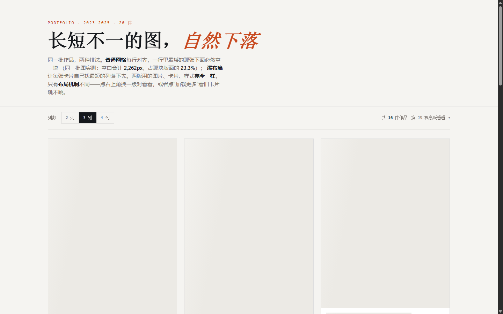


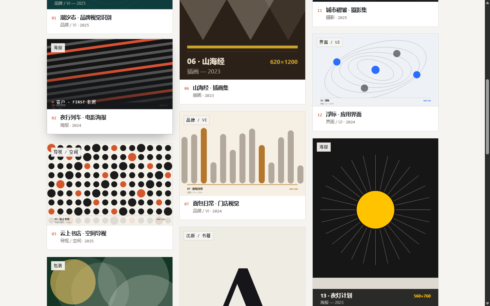
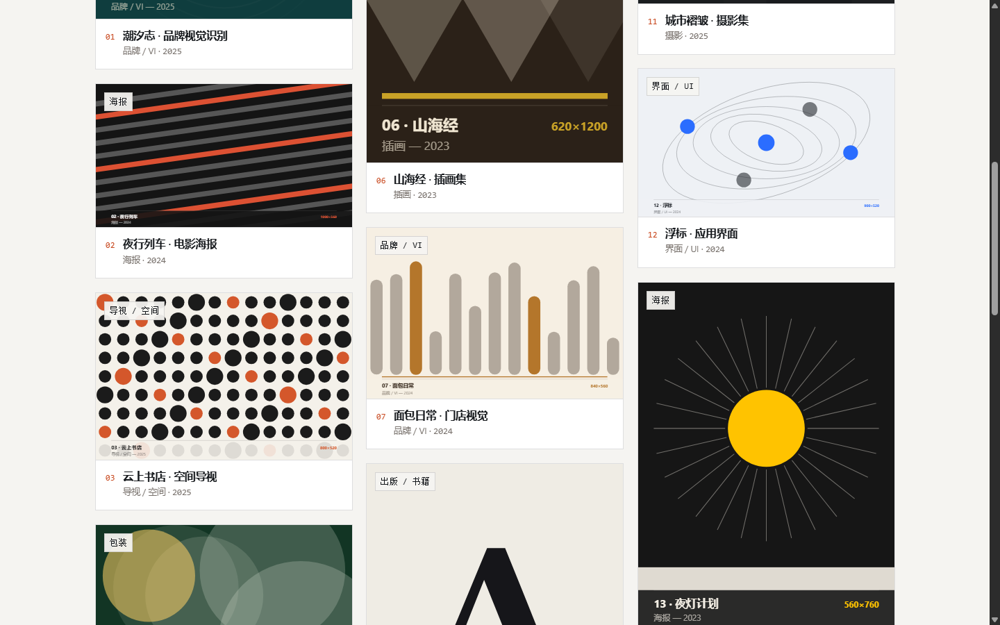
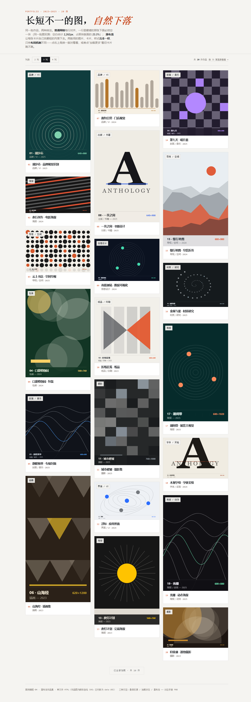
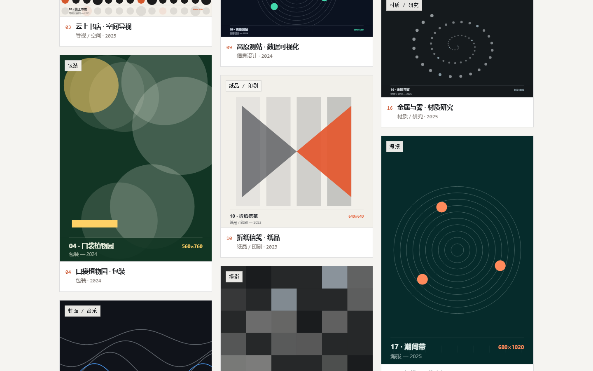
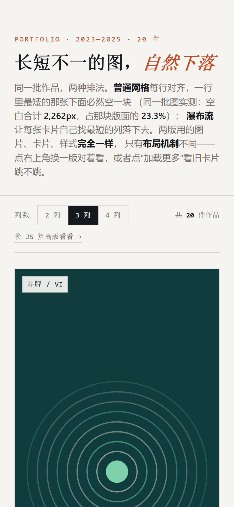
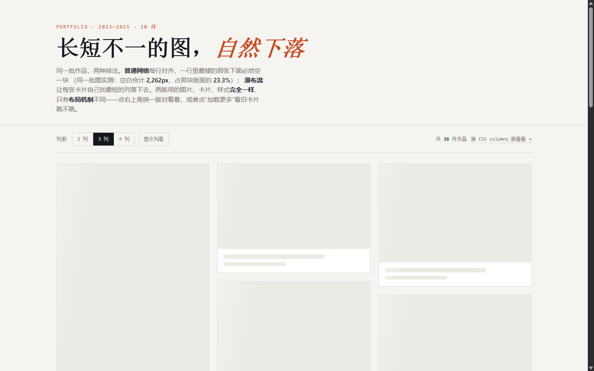
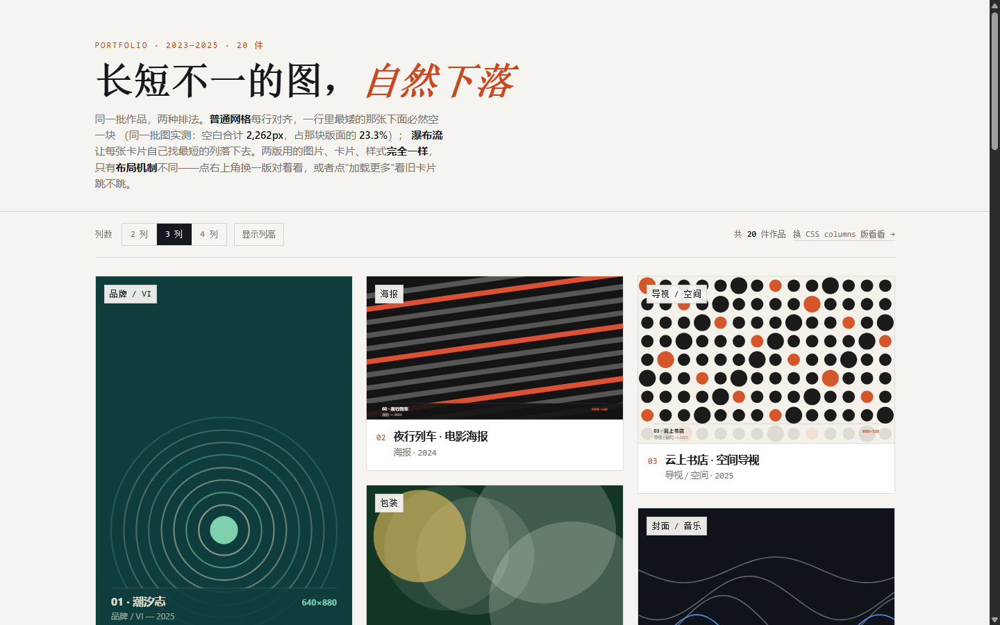
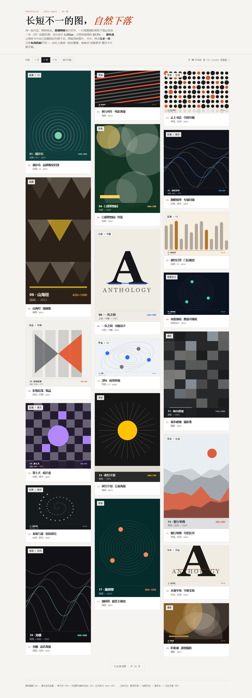
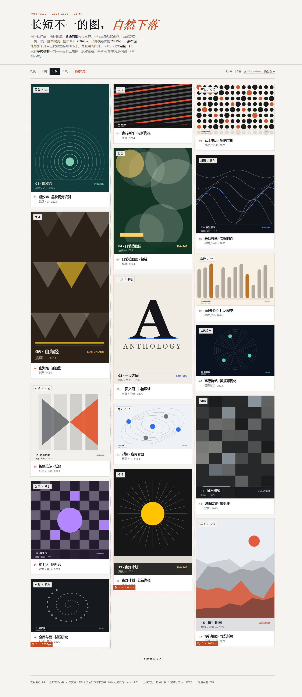
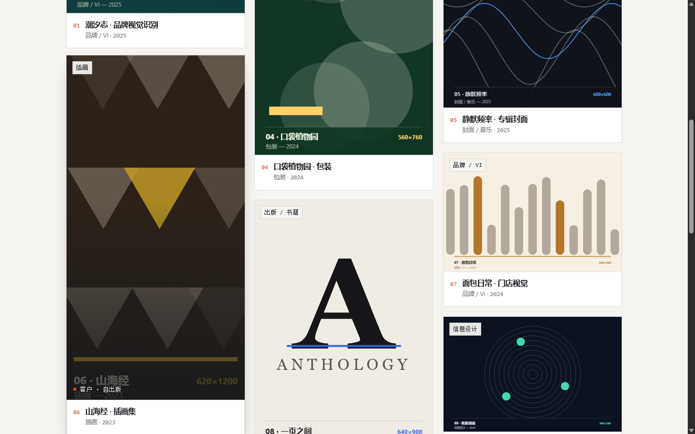
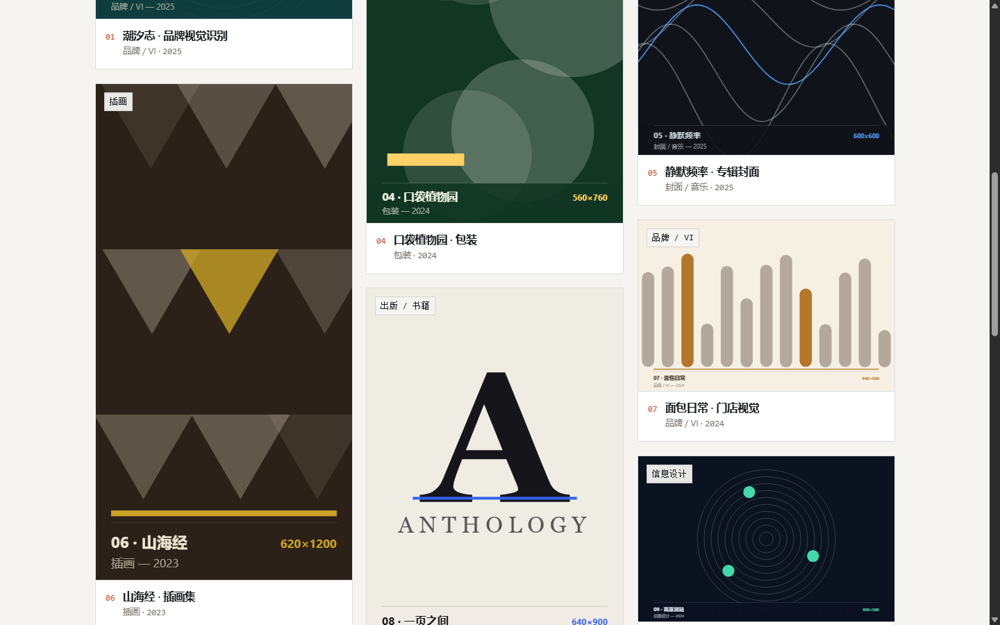

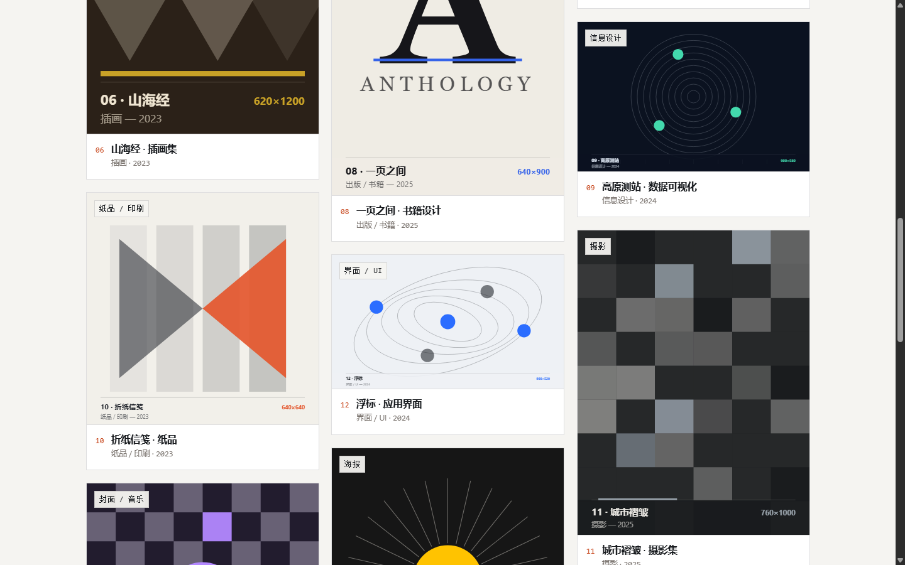
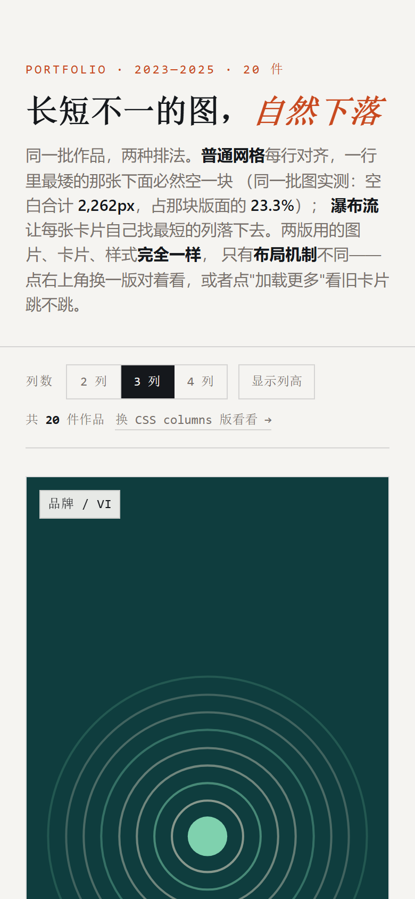